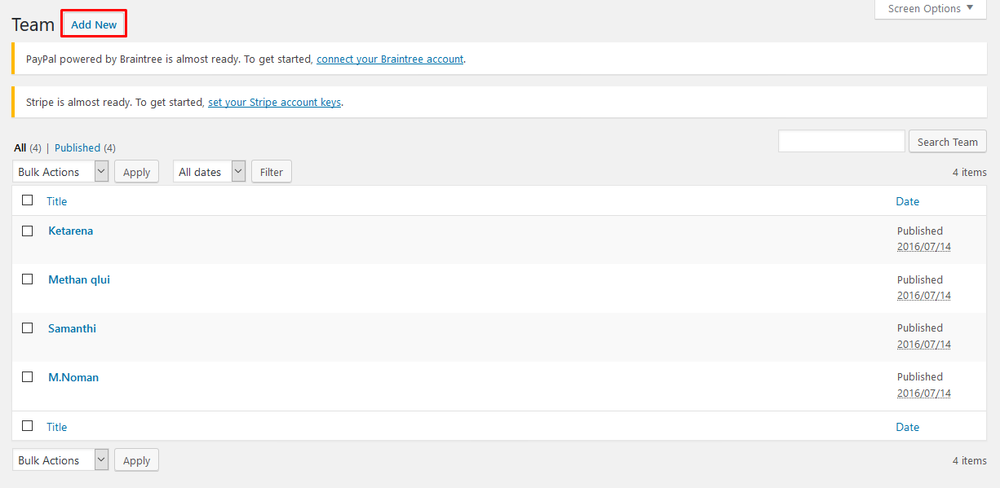

- First Steps
- Demo Data
- Plugins
- Menu
- Pages
- Widgets
- Theme Options
- Shortcode
- Translation
- SEO
- Update our theme
- Support
First Steps
-
Get Started
First, thank you for purchasing our theme!
This guide provides instructions for installation, help on getting started and extensive documentation of features. It is recommended you read it thoroughly to fully leverage the Fcgroup theme's capabilities. Please also make sure to check out our Video Tutorials as they explain everything covered in here in greater depth. We hope you enjoy building with Fcgroup as much as we enjoyed developing it and continue to develop with new features!
-
Installing WordPress
Before beginning the installation and configuring of your new theme, you must first have WordPress already installed on a server.
If you are struggling, here is a very detailed guide at Wordpress Codex that will walk you through every step.
-
Installing The Theme
Once you have setup a copy of WordPress, there are two ways you can go about installing the theme:
- 1. FTP Upload
Unzip the download and upload the theme directory /Fcgroup/ into your WordPress themes directory /wp-content/themes/.
- 2. WordPress Upload
This is definitely the easier route for most. Simply navigate to Appearance > Themes > Add New > Upload Theme. Click the 'browse' button and locate the still zipped theme folder. The theme will be uploaded and installed in a matter of seconds.
- 1. FTP Upload
-
Installing plugins required
Once you have installed and activated our theme you will be prompted to install required and recommended plugins. Just click the link to Begin installing plugins.
Next, check boxes to select all the plugins you want to install, select the bulk action of install from the dropdown box and then click the button to apply.

Next, just click the link to Return to Required Plugins Installer.
Select the plugins you had installed, and then apply the bulk action to activate them.

Finally, you will got a confirmation notice that your plugins were activeded.
Demo Data
-
One-click Importer
To help you set up website with the least efforts, we include in the theme package dummy content file. After installing it, all content seen on the live demo will be imported except for images/videos.
There are two methods you can use, one is using our One-click Importer, the other is Importing manually. To go with the former option, please follow the steps below:
- 1. Go to Fcgroup Option in the left menu.
- 2. The Demo Content menu tab will show.
- 3. Just click Install and wait for the process to complete.
- 4. After the importation is finished, click Save Changes.
Now you go to check your frontend result.
NOTICE:
Note 1: If some sections on frontend are lost images, you must be doing some steps below:
- 1. Go to Regen Thumbnails on the Tools menu.
2. Click Regenerate All Thumbnails and wait until the process completed.
When process got 100%, it's time all of images show full.
Note 2: If Map doesn't show, you must be doing some steps below:
- 1. Go to Import/Export on the Flex Map menu.
2. Click Import tab, and then click Select files... button.
3. You need to select file maps.json on the path: wp-fcgroup > inc > demo-data > fcgroup > maps.json
After importing completed, it's time Map shown good on frontend.
Note 3: If Newsletter form doesn't show, you must be doing some steps below:
1. To show the Newletter form, please go to Newletter on the left menu and follow the steps in image bellow:

2. Copy this code and paste to Form 1 section:
<form class="cms-newsletter cms-newsletter-1" method="post" onsubmit="return newsletter_check(this)" action="http://wpstrong.net/demo/fcgroup/?na=s"> <input type="hidden" value="widget" name="nr"> <input type="email" name="email" required="" class="newsletter-email" placeholder="Enter your email"> <button type="submit" class="newsletter-submit">Go</button> </form>
3. Go to Newletter > List building > Subscription tab. In the previous step, your form is Form 1, so here your Subscription page is subscription_form_1.
4. On the Appearance tab, select Widget > Footer Bottom 1.
5. Enter Subscription on step 3 into Introduction section.
Now Newsletter form will show on frontend
Now you have a website just like our demo.
-
Manual Importing
To imprort the demo content by yourself, please follow the steps below:
- 1. Go to Tools > Import.
- 2. Select Wordpress system then browse for the .xml file. You shoud be able to find it following the path Fcgroup Option > inc > dummy > Fcgroup > XML.
- 3. You will be asked to map the authors in this export file to users on the blog. For each author, you may choose to map to an existing user on the blog or to create a new user.
- 4. You will then have the choice to import attachments, so click on the "Download and import file attachments" box.
- 5. Click Submit.
Now you have a website just like our demo, with the pictures replaced by grey images.
Plugins
-
Custom Post Type UI
This is plugin required all our themes
This plugin provides an easy to use interface to create and administer custom post types and taxonomies in WordPress. This plugin is created for WordPress 4.x.
If you need dedicated support for this plugin, please visit: Custom Post Type UI
-
Visual Composer
After installation, you will be suggested to install additional plugins. To install them and activate, please navigate to Plugins, you will see a list of required and optional plugins. We recommend that you install the following to get the best of our theme:
Visual Composer is the most popular drag and drop editor for wordpress.
If you need dedicated support for this component, please visit: Visual Composer on Code Canyon
-
Revolution Slider
Close
Create a responsive (mobile friendly) or fullwidth slider with must-see-effects and meanwhile keep or build your SEO optimization (all content always readable for search engines). See the heaps of custom transitions/animations for each object on the page!
Customize this slider with our convenient drag & drop backend to your very needs. This plugin features tons of unique transition effects, an image preloader, video embedding, autoplay that stops on user interaction and lots of easy to set options to create your own effects.
For premium support with this plugin please visit: Revolution Slider on Code Canyon
- Newsletter
Newsletter is a real newsletter system for your WordPress blog: perfect for list building, you can easily create, send and track e-mails, headache-free.
It just works out of box!
For detailed inforamtion and support on this plugin, please go to: Newsletter
- Contact Form 7
Contact Form 7 is one of the most popular form builders for wordpress.
We have created styles ready for you to use within your Fcgroup theme.
For detailed inforamtion and support on this plugin, please go to: Contact Form 7
- WooCommerce
Woo Commerce is one of the most popular shopping cart plugins for wordpress.
For detailed inforamtion and support on this plugin, please go to: WooCommerce
- WooCommerce PayPal Powered by Braintree Gateway
This is a PayPal Powered by Braintree Payment Gateway for WooCommerce.
PayPal Powered by Braintree allows you to securely sell your products and subscriptions online using Hosted Fields to help you meet security requirements without causing your theme to suffer.
For detailed inforamtion and support on this plugin, please go to: WooCommerce PayPal Powered by Braintree Gateway
- WooCommerce Stripe Gateway
The Stripe plugin extends WooCommerce allowing you to take payments directly on your store via Stripe’s API.
For detailed inforamtion and support on this plugin, please go to: WooCommerce Stripe Gateway
- FLEX MAP
Flex Map is a wordpress map plugin that provides many features with different map types such as creating area mapping, polygone, polyline, circle, rectangle, single markers, street view markers.
With a simple visual map editor, It is extremely easy to make and place your map anywhere on your frontend wordpress site.
For detailed inforamtion and support on this plugin, please go to: Flex Map
- SoundCloud Shortcode
This plugin converts all SoundCloud Shortcodes into embeddable SoundCloud players. It works for any SoundCloud track, playlist, user, or group.
Once you install this plugin, it works for any of your blog posts.
For detailed inforamtion and support on this plugin, please go to: SoundCloud Shortcode
Menu
-
Creating Menu
- 1. From the 'Appearance' menu on the left-hand side of the Dashboard, select the 'Menus' option to bring up the Menu Editor.
- 2. Select create a new menu at the top of the page
- 3. Enter a name for your new menu in the Menu Name box.
- 4. Click the Create Menu button.
- 5. Click Select to select menu created.
Your new custom menu has been defined.
-
Adding Items to a Menu
You can add different link types into your menu, these are split between panes left of the menu you're currently editing.
- 1. Locate the pane entitled Pages.
- 2. Within this pane, select the View All link to bring up a list of all the currently published Pages on your site.
- 3. Select the Pages that you want to add by clicking the checkbox next to each Page's title.
- 4. Click the Add to Menu button located at the bottom of this pane to add your selection(s) to the menu that you created in the previous step.
- 5. Click the Save Menu button once you've added all the menu items you want.

Your custom menu has now been saved.
-
Creating Multi-level Menus
When planning the structure of your menu, it helps to think of each menu item as a heading in a formal report document. In a formal report, main section headings (Level 1 headings) are the nearest to the left of the page; sub-section headings (Level 2 headings) are indented slightly further to the right; any other subordinate headings (Level 3, 4, etc) within the same section are indented even further to the right.
The WordPress menu editor allows you to create multi-level menus using a simple 'drag and drop' interface. Drag menu items up or down to change their order of appearance in the menu. Drag menu items left or right in order to create sub-levels within your menu.
To make one menu item a subordinate of another, you need to position the 'child' underneath its 'parent' and then drag it slightly to the right.
- Adding Your Menu to Your Site
- Manager Menu Locations
Pages
-
Page options
With the Page Options specially built for our themes, you can easily customize General, Header, Page Title & BC, One Page and Footer of every page.
General
Set padding top to 0px : Enable this option to set padding top of main content is 0px .
Set padding bottom to 0px : Enable this option to set padding bottom of main content is 0px .
Content background color : Set background color for content page, default - inherit from theme option.
Result:
Header
Layout : Select a layout for header.
Select Menu : Custom menu for current page.
Result :
Page Title & BC
Custom: Enable/Disable custom style mode.
Layouts : You can select a layout for page title.
You can select background image for page title.
Result:
One Page
1.Click the arrow on the right of the item to reveal additional configuration options.
Set of attributes such as images below.
2. Enter row id and offset for one page.
3. Enable button one page.
Footer
- Home Page
-
Projects, Team and Pricing.
Projects , Team and Pricing are created using Shortcodes. For more detailed instruction, please head to Shortcode > CMS Grid
-
Post.
Post are created using Shortcodes. For more detailed instruction, please head to Shortcode > CMS Carousel
Widgets
-
Adding Widgets to Sidebar
To Add Widget on Sidebar, please following these steps:
- 1. Navigate to Appearance>Widgets to access the list of widgets and widget section that they can be added. The left hand side show all widgets you can use. The right hand side shows all different section you can add widgets to.
- 2. Simply drag and drop the widget you want into the widgets section you want to the right hand side.
- 3. When you finished, you can visit the site to see results.

Theme Options
-
Theme Option Overview
The options panel is home to all of the theme's extensive configuration options. To view the panel, click on Appearance > Fcgroup Option in the left-hand menu. Here you have the ability to alter many core aspects that make up how your theme looks and behaves. Any of the options that have some ambiguity to them conviently have descriptions to explain their purpose.
With our built-in importer, you will be able to get your site ready in a flash. Simply select a layout and click Import now to start importing demo data.
- Header
-
Logo
Set Up Logo
You can select an image file in your library or upload a new file from your computer to set as logo. Follow the steps below to set up your logo:
- 1. Go to WP Fcgroup > Header > Logo.
- 2. To set logo, cick Upload.
- 3. If you already had the logo image in your media library, simply click on it, then choose Select at the bottom right. If not, switch to Upload files tab, then browse for the file in your computer. After it is uploaded to your library, click on it then Select.
- 4. You can scale the logo up and down by changing Logo Height.
Result for logo:
Your logo will appear on the Header as below:
- Page Title and Breadcrumb
- Styling
-
Typography
Not just color, all text elements are also within your control. You can define the style of Body font and H1 to H6 Headlines for yourself.
Result:
Body font:
H1:

-
Extra Font
On this section, Fcgroup theme had some available fonts for you. If you want to set a special font for a special class, you only need to insert your class into Selector section, and choose the font that you want on the Font dropdown box. Finally, you click Save changes and see your result, all completed.
Example:
1. Copy class that you want to change.
2. Select Font Family, Font Weight & Style and paste class on Selector section.
Result:
- Blog
- Blog Single
- 404
- Footer
- Individual Socials
- Woocommerces
- Optimal Core
- Import/Export
Shortcode
-
Adding Shortcode in Visual Composer
Visual Composer is a powerful Wordpress page builder that allows you to create complex page layouts without touching a single line of code. To switch to Visual Composer's Backend Editor, click on this button:
When Visual Composer's editing pane comes up, click on either of these buttons to Add Element.
A shortcode selecting panel will show up, you can see all the shortcode available in the theme. Select the one you would like to use.
You will then encounter a setting panel for the shortcode (each shortcode has it own setting options), after a bit of configuration, it will show up nicely on your page.
-
CMS Single Fancy Box
- Fancy Style : Select style for single fancy box.
- Shortcode Template : Select your single fancy box template.
- Title Item : Enter title of item.
- Content Item : Enter content of item.
- Image icon : Select image for single fancy box.
- Button Link : Enter link for button.
- Animate Delay : Select "animation in" for page transition.
- CMS Special Image
-
CMS Counter Single
- Content Align : You can choose the type of display Default, Left, Right and Center.
- Title Counter : Enter title of your counter.
- Counter Type : You can choose the starting number of the counter between Zero and Random.
- Digit : Enter the number value of your counter.
- Shortcode Template : Choose a layout to show for the counter.
- CMS Clients
- CMS Typography Carousel
-
CMS Progress Bar
- Mode : Choose between Horizontal and Vertical.
- Item Title : Enter title for progress bar.
- Icon Library : Select libraries available.
- Icon : Select an icon for your progress bar.
- Show Value : Choose "Yes" to show the value number in progress bar.
- Value : Enter the value of progress bar.
- Value suffix : Insert text to specify the progress value. For example: %
- Background Color Bar : Select a color for progress background.
- Progress Color : Select a color for progress bar.
- Width : Set the width of the progress bar either in pixel or in percentage.
- Height : Set the height of the progress bar either in pixel or in percentage.
- Border Radius : Enter a value for border radius. The bigger the value, the rounder the progress border.
- Striped : Select show striped or not show.
- Shortcode Template : Select your progress bar template.
-
CMS Grid
Team
- 1. To display a team profile, first you need to create team profile items. Go to Team > Add new.
- 
- 2. Enter the team name in Title field. Add some Description in the content section if you want.
- 3. Select a Category for team on Categories section. Create more Category by clicking Add New Category Team.
- 4. Set team's profile picture by choosing a Set featured image.
- 5. Finally, Publish.
- Result:
- 1. Go to Page > Add New.
- 2. Using Visual Composer, choose Add Element.
- 3. Select CMS Grid.
After creating team items, it's time to display them in a page using CMS Grid shortcode.
- Source: Click on Build Query more options will show up.
- Post types: Set Post Types as team.
- Post count: Limit the number of team to display in carousel by entering Post Count number.
- Order by: Select how to sort retrieved posts.
- Sort order: Designates the ascending or descending order.
- Taxonomies: Enter category names here.
- Layout Type: Select layout style to show.
- Columns Devices: Select the number of columns displayed.

- Shortcode Template: Choose a style to show for team.
- Result:
Projects
- 1. To display Projects in a page, first you need to create projects items. Go to Projects > Add new.
- 2. Enter the projects name in Title field. Enter projects content in the content section.
- 3. Select a Category on projects Categories. Separate Categories Projects with commas Choose from the most used Categories Projects.
- 4. Set projects picture by choosing a Featured Image.
- 5. Finally, Publish.
- Result:
After creating projects items, it's time to display them in a page using CMS Grid shortcode.
- Source: Click on Build Query more options will show up.
- Post types: Set Post types as projects.
- Post count: Limit the number projects to display in grid by entering Post Count number.
- Order by: Select how to sort retrieved posts.
- Sort order: Designates the ascending or descending order.
- Layout Type: Select layout style to show.
- Columns Devices: Select the number of columns displayed.
- Shortcode Template: Choose a layout to show for the projects.
- Result:
Pricing
- 1. To display pricing in a page, first you need to create pricing items. Go to Pricings > Add new.
- 2. Enter pricing name in Title field.
- 3. Select a Category on pricing Categories. Separate Categories pricing with commas Choose from the most used Categories pricing.
- 4. Enter the options for the data field.
- 5. Finally, Publish.
- Result:
After creating pricing items, it's time to display them in a page using CMS Grid shortcode.
- Source: Click on Build Query more options will show up.
- Post types: Set Post Types as our pricing.
- Post count: Limit the number pricing to display in grid by entering Post Count number.
- Order by: Select how to sort retrieved posts.
- Sort order: Designates the ascending or descending order.
- Layout Type: Select layout style to show.
- Columns Devices: Select the number of columns displayed.
- Shortcode Template: Choose a layout to show for the pricing.
- Result:
-
CMS Carousel
Posts
- 1. To display Posts in a page, first you need to create posts items. Go to Posts > Add new.
- 2. Enter Posts name in Title field. Enter posts content in the content section.
- 3. Select a Category for posts on Categories section. Create more Category by clicking Add New Category.
- 4. Set posts's picture by choosing a Set featured image.
- 5. Finally, Publish.
- Result:
After creating posts items, it to display them in a page using CMS Carousel shortcode.
- Source: Click on Build Query more options will show up.
- Post types: Set Post Types as posts.
- Post count: Limit the number posts to display in carousel by entering Post Count number.
- Order by: Select how to sort retrieved posts.
- Sort order: Designates the ascending or descending order.
- Devices: Select item quantity shown on screens.
- Margin Items: Set space between items.
- Shortcode Template: Choose a layout to show for the posts.
- Result:
Translation
-
Translating the theme
The theme is compatible with WPML plugin, thus can be translated into multiple languages. Follow this link for guide. You can also use POEdit plugin for translation.
- 1. Located the .po and .mo files in folder /languages.
- 2. Select language in admin options.
- 3. Find language prefix (save option and reload front-end view html).
- 4. Copy two file .po & .mo and rename to eg( en_CA.mo & en_CA.po ... ) same for other languages .
- 5. Open the file .po with POEdit and translate the texts into your preferred language.
- 6. When complete, you’ll want to save the file twice, as two separate files – a .po file and a .mo file. When you save the files, you must name them according to your language code. Find a list of language codes at WordPress in your Language. As an example, the language code for English is en_EN, so you would save the translated files as en_EN.po first, then en_EN.mo.
- 7. When that’s done, simply upload the files to your theme folder.
SEO
-
SEO
Our themes are optimized by with H1, H2, H3, H4, H5 tags, clean code, HTML5 but if you want to get higher ranking on search engines, you must need some help from SEO plugins and Google Pagespeed Service:
UPDATE OUR THEMES
-
UPDATE OUR THEMES
You can update our theme using some ways bellow
1. Update theme using Envato WordPress Toolkit
or2. You can update manual theme
If you have any troubles while using auto update ( It is likely to be a permissions issue ) then you may want to manually update the theme via FTP or Cpanel.
Download the latest version of the theme on ThemeForest download page and simply replace with the old one via FTP or Cpanel.
Support
-
Support
The team at Farost are always happy to help you with any questions or recommendations you have about the Fcgroup theme. If you need any help or support please contact us through the TF Messaging system or
direct at Email: farost.agency@gmail.com
direct at Forum: here
- Newsletter


{kind=link}
{kind=link}
{kind=link}
{kind=link}
{kind=link}
{kind=link}
{kind=link}
{kind=link}
{kind=link}
{kind=link}
{kind=link}
{kind=link}
{kind=link}
{kind=link}
{kind=link}
{kind=link}
{kind=link}
{kind=link}
{kind=link}
{kind=link}
{kind=link}
{kind=link}
{kind=link}
{kind=link}
{kind=link}
{kind=link}
{kind=link}
{kind=link}
{kind=link}
{kind=link}
{kind=link}
{kind=link}
{kind=link}
{kind=link}
{kind=link}
{kind=link}
{kind=link}
{kind=link}
{kind=link}
{kind=link}
{kind=link}
{kind=link}
{kind=link}
{kind=link}
{kind=link}
{kind=link}
{kind=link}
{kind=link}
{kind=link}
{kind=link}
{kind=link}
{kind=link}
{kind=link}
{kind=link}
{kind=link}
{kind=link}
{kind=link}
{kind=link}
{kind=link}
{kind=link}
{kind=link}
{kind=link}
{kind=link}
{kind=link}
{kind=link}
{kind=link}
{kind=link}
{kind=link}
{kind=link}
{kind=link}
{kind=link}
{kind=link}
{kind=link}
{kind=link}
{kind=link}
{kind=link}
{kind=link}
{kind=link}
{kind=link}
{kind=link}
{kind=link}
{kind=link}
{kind=link}
{kind=link}
{kind=link}
{kind=link}
{kind=link}
{kind=link}
{kind=link}
{kind=link}
{kind=link}
{kind=link}
{kind=link}
{kind=link}
{kind=link}
{kind=link}
{kind=link}
{kind=link}
{kind=link}
{kind=link}
{kind=link}
{kind=link}
{kind=link}
{kind=link}
{kind=link}
{kind=link}
{kind=link}
{kind=link}
{kind=link}
{kind=link}
{kind=link}
{kind=link}
{kind=link}
{kind=link}
{kind=link}
{kind=link}
{kind=link}
{kind=link}
{kind=link}
{kind=link}
{kind=link}
{kind=link}
{kind=link}
{kind=link}
{kind=link}